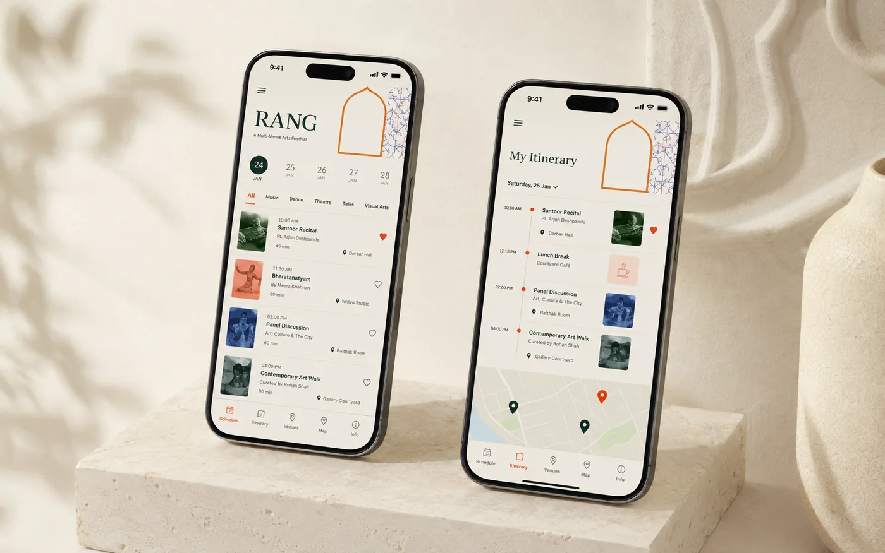
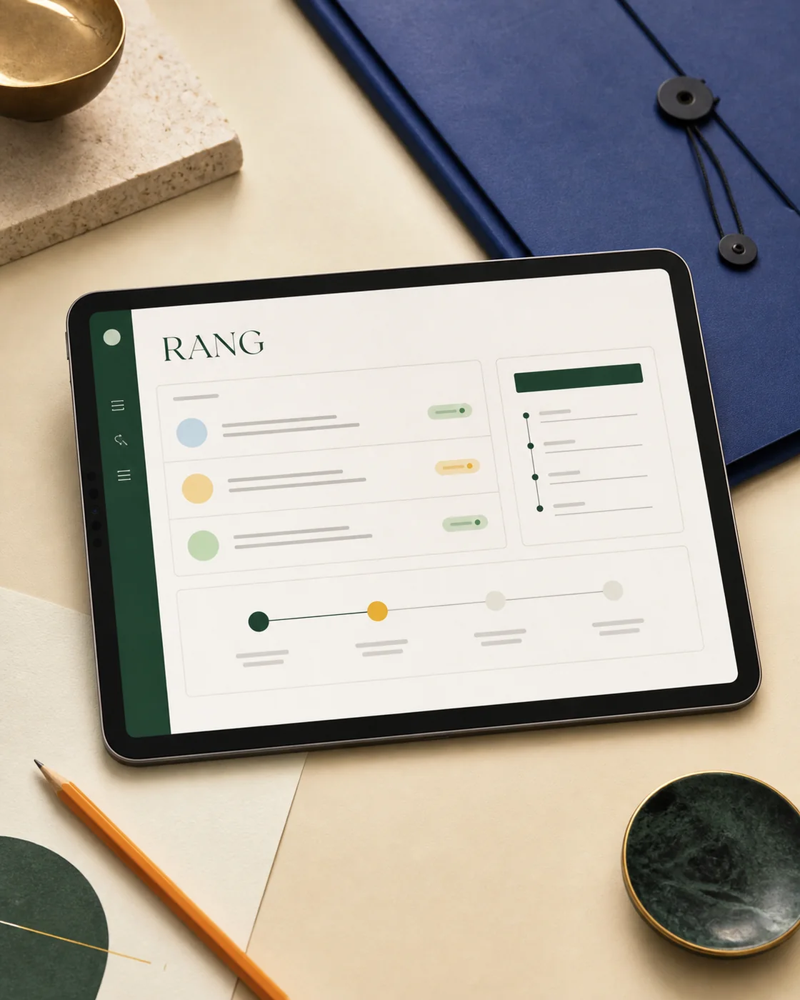
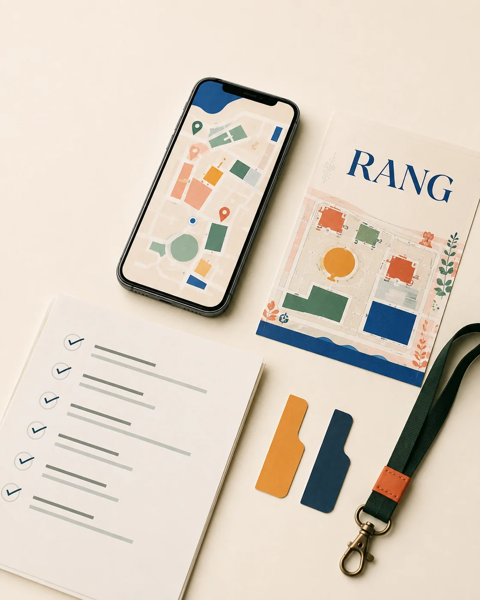

01 / CONTEXT
One festival. Many moving parts.
RANG is a fictional weekend arts festival spread across theatres, courtyards and public spaces. Programme changes live in spreadsheets, venue details arrive through messages and visitors struggle to build an itinerary across languages. The project creates one reliable source of truth for audiences and the team behind the festival.
Experience principles
- Make the next event, venue and route obvious.
- Design for patchy connectivity and last-minute programme changes.
- Treat language and accessibility as launch requirements, not extras.
02 / MVP
Only what visitors need most.
Live programme
A searchable schedule with venue, language, duration and accessibility information.
My festival
A lightweight saved itinerary with timing conflicts and change notifications.
Venue wayfinding
Simple maps, travel time and a low-data view for finding the next performance.
Content control
One content model, named owners and a publish flow for programme changes.
03 / ROADMAP
Six weeks to a launch-ready MVP.
Discover
Audience journeys, team interviews and service blueprint.
Define
MVP scope, content model, owners and acceptance criteria.
Build
Design and engineering sprints with content running in parallel.
Test & launch
UAT, venue checks, rehearsal, go-live and hypercare.
04 / RISKS
Plan for the live moment.
| RISK | CONTROL | OWNER |
|---|---|---|
| Late programme changes | Named content owner, cut-off rules and urgent publish path | Festival operations |
| Incorrect translations | Language review and page-level approval status | Content lead |
| Weak venue connectivity | Cached itinerary, compressed assets and printed fallback QR map | Engineering lead |
| Low visitor adoption | On-ticket onboarding, venue signage and staff briefing | Marketing lead |
05 / REFLECTION
What this demonstrates.
A digital launch is also a content and operations launch. The strongest interface still fails if programme data has no owner, changes cannot be published quickly or venue teams do not know the fallback. This simulation shows how I connect product experience to the operational reality behind it.
Skills: MVP scoping, stakeholder alignment, content operations, sprint coordination, risk ownership, UAT and launch readiness.
06 / PRODUCT SYSTEM
Design the interface and the operation.
The experience pairs a calm visitor-facing mobile product with a disciplined content workflow and a practical launch-control layer.


